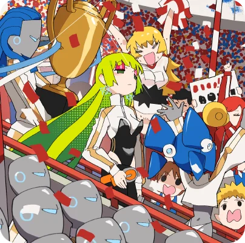
决赛大赛场
明王山体育场位于临浜区，是联合城为数不多的大型综合体育中心。除水上运动外，所有田径项目均可在此举办；当没有体育赛事时，这里还可举办演唱会、大型非体育赛事等活动。这里几乎从未有过空闲的时候，热闹的氛围从建成之初就从未间断。
地图说明
决赛大赛场 是限时玩法人机大战运动会的专属地图，在活动智械狂潮期间开放。 在决赛大赛场中，仅需3人即可开始游戏。 运动会决赛拥有地图专属机制：心智。 AI机器人们会不停的解析并剥夺角色的心智，请保持心智不被侵蚀，一旦被彻底解析完成，你将无法与机器人们正面抗衡。
地图事件
全难度
| 图像 | 名称 | 描述 | 触发条件 | 备注 |
|---|---|---|---|---|
| 万众期待 | 科技巨头嘎呜登场，裁判艾米登场，刷新3个机械投手 | 进度达到1 | 该地图事件触发后，会在地图坐标A2、A9、H9处刷新3个机械投手，在地图坐标G9处刷新裁判艾米，并在地图坐标C1处刷新科技巨头嘎呜 | |
| 幕间狂欢 | 刷新1个机械监控师 | 进度达到3 | 该地图事件触发后，会在地图坐标F2处刷新1个机械监控师 | |
| 准备上场 | 刷新1个机械四分卫，1个机械监控师。所有怪物攻击力+1，防御力+1 | 进度达到6 | 该地图事件触发后，会在地图坐标C8处刷新1个机械四分卫，并在地图坐标H2处刷新1个机械监控师 | |
| 绝对冲撞 | 刷新1个机械四分卫，2个机械监控师 | 进度达到10 | 该地图事件触发后，会在地图坐标F2处刷新1个机械四分卫，并在地图坐标C2、F7处刷新2个机械监控师 | |
| 永不言弃 | 难以置信！居然没有倒下！ | 进度达到10且存在1名被击倒的角色恢复行动，有概率触发该地图事件[1] | 该地图事件触发后，会将地图BGM切换为“战(Another Mix)”，同时使恢复行动的角色获得99层【心智】，攻击力+9，防御力+9，移动速度+9，出牌数+9。 |
地图任务
怪物属性
| 4 1 11 4 1 12 | |
| 0 0 4 0 0 4 | |
| 5 1 24 5 1 27 6 1 30 6 2 33 | |
| 3 0 8 4 0 9 4 1 10 4 1 11 | |
| 5 1 18 5 1 20 5 2 22 6 2 24 | |
| 2 2 14 3 2 16 3 3 18 4 3 20 | |
| 3 1 128 3 1 138 4 1 148 4 1 158 | |
| 4 2 15 4 2 17 5 2 18 5 2 20 |
行动顺序
行动顺序 小偷 科技巨头嘎呜 机械监控师 宝藏桶 机械投手 智械海盗鲨 机械四分卫 思维飞艇 裁判艾米 召唤的思维飞艇

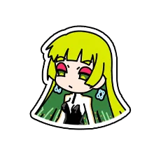
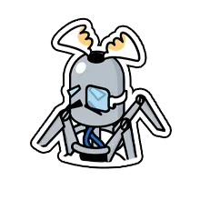

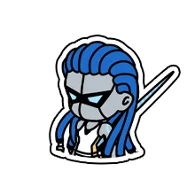
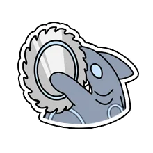
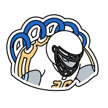
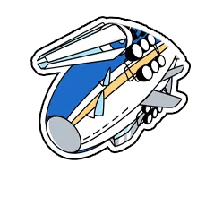
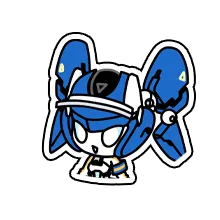
地图专属筹码
电击枪 击倒精英单位后，获得1层【心智】。【心智】层数大于等于3时，攻击力+2，防御力+2。 自适应核心 心智小于等于3时，受到伤害-1。 心智大于等于3时，攻击力+2。 娱乐终端 攻击力+4，防御力+4。 回合结束时，心智层数-1。 原初意识 心智增加时，生命值上限永久+1。 心智减少时，攻击力永久+1。 运动手环 攻击力+1，攻击时，如果防御方的移动速度受到影响，攻击力额外+4。 时间怀表 被击倒后的下一轮开始时，立即复活。该轮怪物行动时，全体怪物被时间静止。随后本筹码变为时间怀表(破碎)。
地图专有卡牌


 人机交融
人机交融 指定一个角色，使目标获得1层【心智】 自身本回合出牌数+1
人机交融
人机交融 指定一个角色，使目标获得1层【心智】 自身本回合出牌数+1

地图特殊效果/状态
丨 心智 丨 用于抵抗智械怪物的能力，对特定单位造成额外伤害。 丨 超量解析 丨 3层时，自身和思维飞艇获得攻击力+1，防御力+1。思维飞艇主动技能可在伤害后降低目标1层【心智】 6层时，自身和思维飞艇获得攻击力+1，防御力+1。思维飞艇的主动技能基础伤害+2。 9层时，自身和思维飞艇获得攻击力+2，防御力+2，移动速度+2。
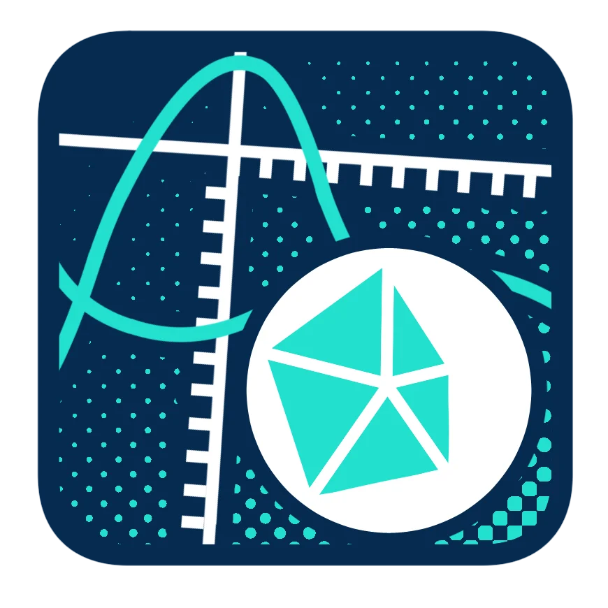
丨 硅基进化 丨 强化次数 丨 裁判补正 丨 攻击力（防御力）-2，击杀获得属性的怪物后移除 丨 裁判补正 丨 攻击力（防御力）+2，被击杀后恢复受罚角色属性 丨 接力棒 丨 攻击力+2，防御力+2，移动速度+2。轮次结束时，传递给下一行动顺位的玩家。畸变组件
决赛大赛场共有22种畸变组件。畸变组件的组件总数及组件总评分根据难度不同处在不同固定区间，如下表：
| 难度 | 组件总数 | 组件总评分 |
|---|---|---|
| 普通 | 3、4 | +1、+2 |
| 困难 | 4 | +1、+2 |
| 噩梦 | 4、5 | -1、0 |
| 疯狂 | 5 | -2、-1、0 |
在所有难度中，一定仅存在1个第一类畸变组件。当难度为疯狂时，一定仅存在1个第二类畸变组件，但这不意味着其他难度不会向游戏内增加第二类畸变组件，事实上，在游戏难度为普通/困难/噩梦时仍有可能会初始给出1个第二类畸变组件。 以上所有内容皆不计入裁判艾米的被动技能“赛事主持”。事实上，由于裁判艾米的被动技能“赛事主持”会从全部未加入当前游戏的畸变组件中任意选择1个加入游戏，导致实际游戏中畸变组件的组合往往与以上规定相悖。 关于该地图的畸变组件如下：
第一类畸变组件
人机对决 ------- 所有角色进入游戏时获得1层【心智】 所有角色获得筹码【电击枪】 亲切裁判 ------- 所有角色进入游戏时获得2层【心智】 裁判艾米进入游戏时即加入战斗，属性获得额外强化，且可享受外置主脑强化效果。裁判艾米使用主动技能时，可额外减少目标1层心智。 击倒裁判艾米后，所有角色获得1张人机交融，该轮结束时额外选择1次筹码 全力全开 ------- 所有角色进入游戏时获得3层【心智】 首领获得受到伤害永久-2。首领使用主动技能后，额外获得1层【超量解析】。【超量解析】达到12层时，首领额外获得极为强大的增益 所有玩家获得筹码【原初意识】


第二类畸变组件
裁判的关注1 ------- 裁判艾米获得主动技能【黄牌警告】：指定距离最远的一个角色判罚，使其下次移动速度-2。该技能冷却时间为3轮。 裁判的关注2 ------- 裁判艾米获得主动技能【红牌判罚】：随机指定一个角色判罚，将该角色2点攻击力或防御力转移给一个随机非首领怪物，该怪物被击倒后返还属性。该技能冷却时间为3轮。
其他畸变组件
能量紊乱 ------- 角色回合开始时，其战斗卡牌的费用随机变为0-4 狂风 ------- 角色与怪物的移动速度+2。如果角色或怪物移动的最终移动点数大于10，其主动技能冷却时间-1 暴雨 ------- 使用效果牌时，受到1点伤害，本回合攻击力+1 神秘宝藏 ------- 游戏开始时随机刷新1个宝藏桶，之后每隔5轮，随机刷新1个新的宝藏桶 宝藏桶每次最多受到1点伤害，击倒它的角色获得1个随机筹码 灵光一闪 ------- 获得卡牌时，33%复制该卡牌并加入手牌（每回合最多触发3次） 敏捷 ------- 角色闪避成功后，获得1层反击 打劫 ------- 游戏开始时，所有角色额外获得6星币，进度+1 筹码商店的价格不会上涨 雷云 ------- 地图随机2个区域出现雷云，角色在雷云中停留受到2点伤害，智械怪物在雷云中停留恢复3点生命值 晕船 ------- 如果角色移动的最终点数大于8，则回合结束时在所在的地块放置【谜之物体】 海盗王的号令 ------- 首领与精英怪物的攻击力+1、防御力+1 首领怪物使用主动技能后，恢复所有怪物3点生命值 精准选择 ------- 轮次基础奖励卡牌，改为在四张中选一张 意外之财 ------- 转账时30%概率自身额外获得8星币 复制卡牌 ------- 一轮一次，手牌数小于4时，复制使用的第1张效果牌 一轮一次，手牌数大于5时，使用效果牌后，随机丢弃1张卡牌 套利 ------- 角色的回合结束后，获得自身星币10%的星币(向下取整) 接力棒 ------- 游戏开局时，第一行动顺位玩家获得【接力棒】（攻击力+2，防御力+2，移动速度+2） 轮次结束后，【接力棒】强制传递给下一顺位玩家 抢断 ------- 角色经过友方角色时，自身受到1点伤害 广域标记 ------- 所有单位登场后，获得3层标记

地图
任务 击倒机械投手0\3 所有角色获得 强化筹码*1 击倒机械监控师0\2 所有角色获得 强化筹码*1 击倒机械四分卫0\2 所有角色获得 强化筹码*1 击倒思维飞艇0\2 所有角色获得 强化筹码*1, 进度-1 击倒裁判艾米0\1 所有角色获得 强化筹码*1
万众期待 万众期待 科技巨头嘎呜登场，裁判艾米登场，刷新3个机械投手 2
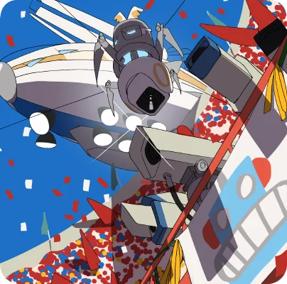
幕间狂欢 幕间狂欢 刷新1个机械监控师 45
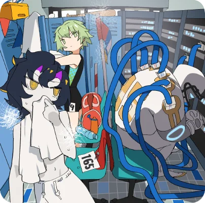
准备上场 准备上场 刷新1个机械四分卫，1个机械监控师。所有怪物攻击力+1，防御力+1 789
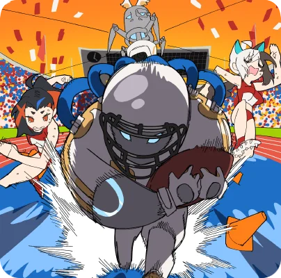
绝对冲撞
绝对冲撞 刷新1个机械四分卫，2个机械监控师 111213141516 地块统计
A2=保障点
A3=怪物突击门
A4=筹码商店
A5=卡牌奖励
A6=疾行
A7=天降横祸
A8=全员事件
A9=天降横财
B2=天降横财
B9=怪物
C1=怪物
C2=卡牌奖励
C3=起始点1
C4=全员事件
C5=恢复
C6=怪物突击门
C7=起始点2
C8=商店
D1=疾行
D8=思维强化
E1=恢复
E8=疾行
F1=思维强化
F2=商店
F3=怪物突击门
F4=天降横祸
F5=起始点3
F6=全员事件
F7=卡牌奖励
F8=怪物
G2=怪物
G9=天降横财
H2=天降横财
H3=全员事件
H4=疾行
H5=天降横祸
H6=商店
H7=怪物突击门
H8=卡牌奖励
H9=保障点
#fe1fee=C2->B2,C8->D8,F2->F1,F8->G9
#00f1f9=C2->C1,C8->B9,F2->G2,F8->E8
起始点1=270
起始点2=90
起始点3=270
8
9
A2=普通~疯狂:万众期待>1062
A9=普通~疯狂:万众期待>1062
H2=普通~疯狂:万众期待>1062, 普通~疯狂:准备上场>1064
G9=普通~疯狂:万众期待>1061
C1=普通~疯狂:万众期待>1065
F2=普通~疯狂:幕间狂欢>1064, 普通~疯狂:绝对冲撞>1063
C8=普通~疯狂:准备上场>1063
C2=普通~疯狂:绝对冲撞>1064
F7=普通~疯狂:绝对冲撞>1064
地块统计
A2=保障点
A3=怪物突击门
A4=筹码商店
A5=卡牌奖励
A6=疾行
A7=天降横祸
A8=全员事件
A9=天降横财
B2=天降横财
B9=怪物
C1=怪物
C2=卡牌奖励
C3=起始点1
C4=全员事件
C5=恢复
C6=怪物突击门
C7=起始点2
C8=商店
D1=疾行
D8=思维强化
E1=恢复
E8=疾行
F1=思维强化
F2=商店
F3=怪物突击门
F4=天降横祸
F5=起始点3
F6=全员事件
F7=卡牌奖励
F8=怪物
G2=怪物
G9=天降横财
H2=天降横财
H3=全员事件
H4=疾行
H5=天降横祸
H6=商店
H7=怪物突击门
H8=卡牌奖励
H9=保障点
#fe1fee=C2->B2,C8->D8,F2->F1,F8->G9
#00f1f9=C2->C1,C8->B9,F2->G2,F8->E8
起始点1=270
起始点2=90
起始点3=270
8
9
A2=普通~疯狂:万众期待>1062
A9=普通~疯狂:万众期待>1062
H2=普通~疯狂:万众期待>1062, 普通~疯狂:准备上场>1064
G9=普通~疯狂:万众期待>1061
C1=普通~疯狂:万众期待>1065
F2=普通~疯狂:幕间狂欢>1064, 普通~疯狂:绝对冲撞>1063
C8=普通~疯狂:准备上场>1063
C2=普通~疯狂:绝对冲撞>1064
F7=普通~疯狂:绝对冲撞>1064
- ↑ 这可能不准确。